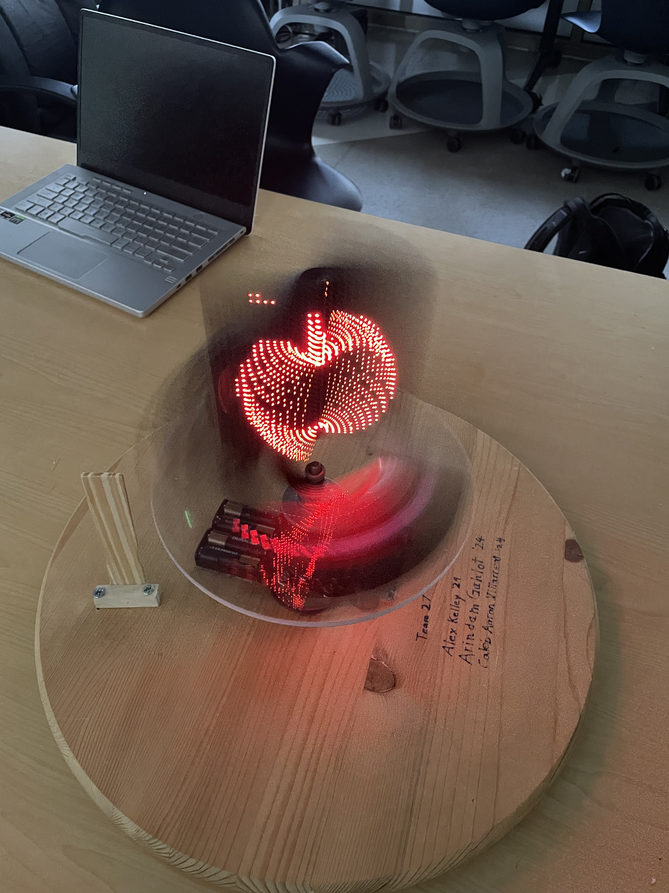
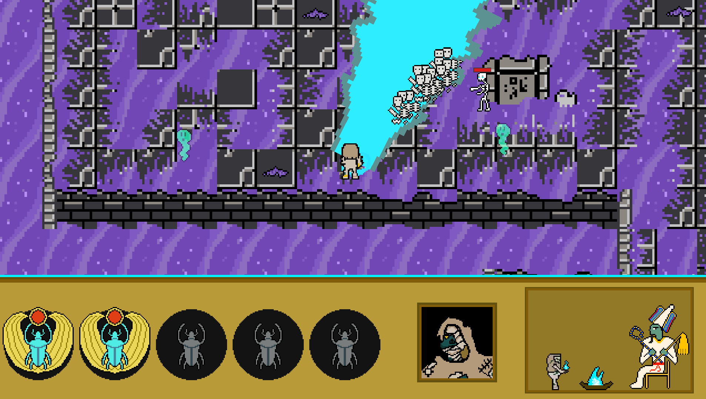
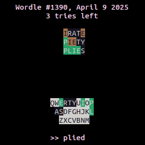
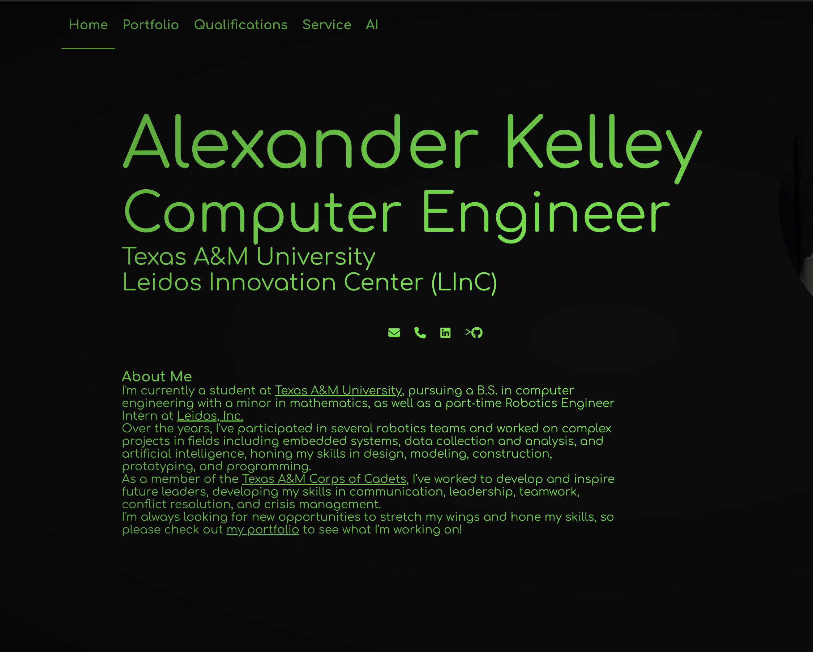

-

Stream Optimization for Real-Time Object Detection
My capstone project focused on optimizing a real-time object detection algorithm on an FPGA using hardware acceleration techniques and custom data pipelines.
-

Volumetric Display
For this project, I worked with my team to design and build a volumetric display using persistence of vision. This was achieved by mounting an LED display on a spinning platform and displaying slices of a 3D model in rapid succession to create the illusion of a 3D object floating in mid-air.
-

Revenge of the Pharaoh
Welcome to the afterlife! In Revenge of the Pharaoh, play as a restless former pharaoh who wants his job back. Claw your way free from the clutches of Osiris and make your way to a final showdown. Will you usurp the throne and rise to your former glory? Or will you fall, and be lost to the sands of time?
As the class project for Game Development (CSCE 443), I and a group of 4 other people made this game in a semester using Unity.
-

WordleArchive
I wrote this CLI app in C++ when the Wordle Archive website was shut down so that my grandpa could still play through the backlog of Wordles. It supports several different play modes, including using a custom word list with any length of words. He enjoyed it so much that he's still using it to try out various starting words and strategies.
-
ASCII Art Shader
I made this as a way to learn GLSL because graphics has always been a field that fascinates me. It's a WebGL shader converting live imagery to ASCII art, using edge detection & local contrast to preserve high-frequency details where possible. It can be configured to generate line art or shaded art, and works in both color and black and white.
-

arkel-77.github.io (this website)
As the first project for CSCE 331 (Software Engineering), I made this website from scratch to showcase my work and learn about web development & responsive design. It's a simple static site written in raw HTML/CSS with some JavaScript for interactivity.